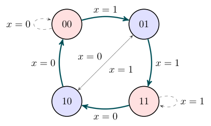
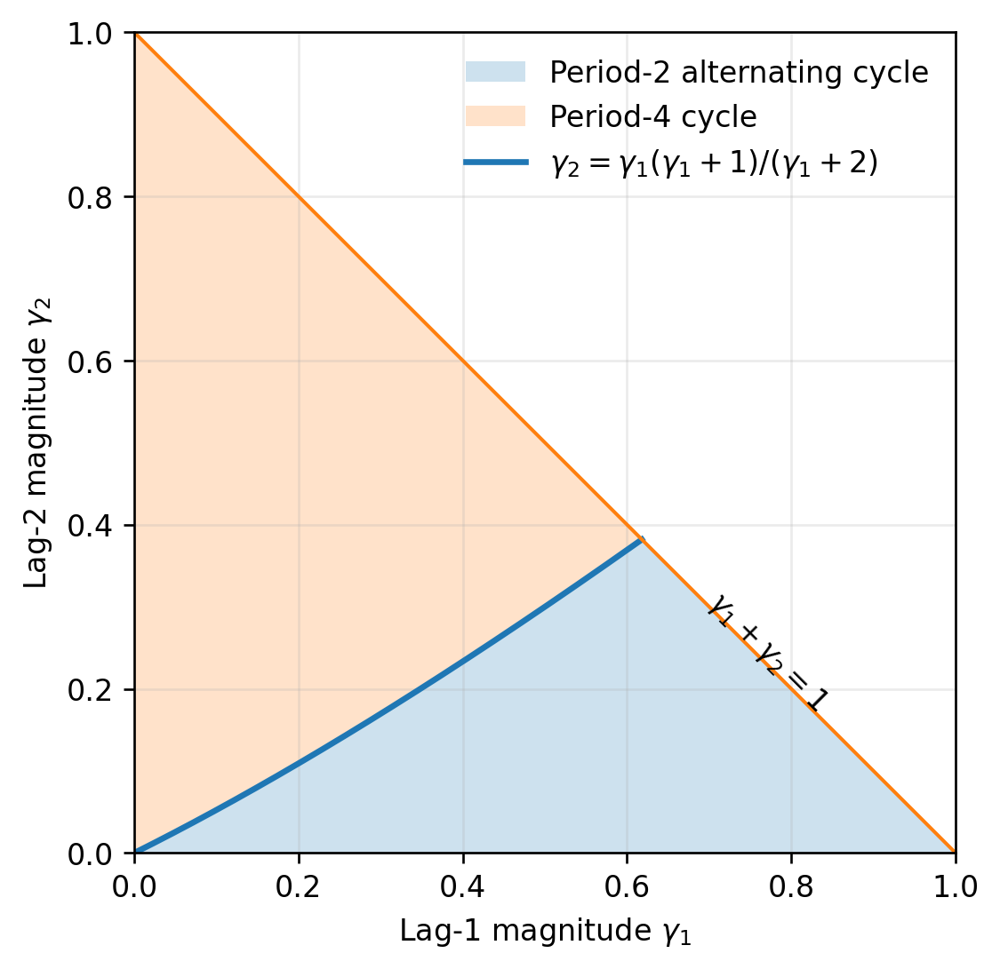
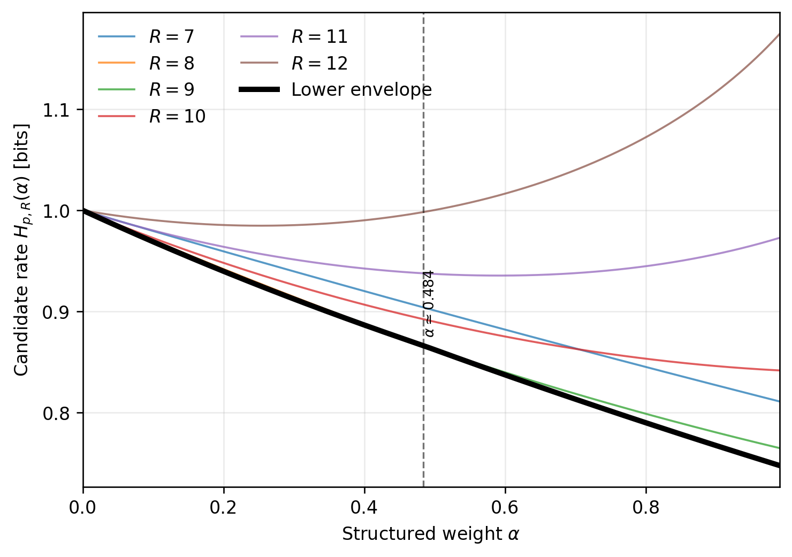

We study block min-entropy for binary sources with finite memory. The context graph expresses the asymptotic rate as a minimum mean cycle cost and supplies certificates valid at every block length. For generalized binary autoregressive sources and mixtures of parity rules, we give a polynomial gcd criterion for attaining the universal noise floor. When the rules are incompatible, polynomial relations force defects and yield explicit weighted entropy gaps. This argument gives a complete solution for every source with two active lags. We also prove exact finite-block invariance under deterministic XOR masks, exhibit a golden-ratio spectral correction at an order-two transition, and derive symbolic certificates for balanced negative sources through order four. For higher orders, we formulate a two-run conjecture and prove that its continuum limit has a unique, smoothly varying minimizing run ratio.
For an independent binary source, the most likely block repeats the more likely bit. With memory, choosing a likely bit changes the future context and may make later outputs less likely. Finding the most likely block therefore requires a path through the space of histories.
An order-\(p\) source has a finite context graph. Its nodes are length-\(p\) histories, and an edge appends one bit. Weight each edge by the negative logarithm of its transition probability. Products of probabilities become sums of costs, and the most likely block becomes the cheapest path. Removing cycles leaves only a bounded number of edges, so the asymptotic min-entropy rate is the minimum mean cycle cost. Potentials that bound every edge give finite-block guarantees as well as certificates of cycle optimality.
Our main application is the generalized binary autoregressive process, gbAR(\(p\)) [1]. At each time, the source selects a lag and copies or flips its bit, or emits fresh noise. With uniform noise, a transition is most likely when all selected copy and flip instructions agree. We first ask whether a sequence can satisfy all these instructions at every time. A polynomial gcd and evaluations modulo two give a complete test, also valid for mixtures of general parity rules.
If the rules are incompatible, a polynomial relation among them forces at least one defect in each translated window. Counting these windows and weighting defects by their entropy cost gives a positive gap above the noise floor. For two active lags, a periodic word attains this bound, solving the problem for every choice of lags, signs, and weights. For more rules, the distribution of simultaneous defects matters. We obtain further exact families and isolate a two-run candidate for the balanced purely negative model at general order.
Min-entropy and average conditional min-entropy are standard measures of guessing probability [2, 3], and predictors provide operational upper bounds on source min-entropy [4]. The gbAR model belongs to the mixture-based discrete autoregressive family introduced by Jacobs and Lewis and extended to signed coefficients by Jentsch and Reichmann [5, 1]. Our previous work studied finite-block and predictor-based min-entropy for gbAR sources [6]; the present paper isolates the exact asymptotic structure.
The finite-state part uses classical graph and spectral tools. Minimum mean cycles, circulation duality, and max-plus cyclicity give the rate, the reduced-cost certificate, and the eventual finite-block correction [7, 8]. The Rényi rate is a Perron-root formula [9]. In ergodic-optimization language, minimum cycles support minimizing measures and reduced-cost potentials are finite-state sub-actions [10, 11, 12, 13]. The large-order limit is the zero-temperature limit of a locally constant potential, whose spectral asymptotics and Gibbs selection are well studied [14, 15].
The homogeneous parity systems define one-dimensional group shifts; compatible affine systems are their translates. Both can be read as convolutional constraints [16, 17]. Gauge removal and frustrated sign patterns parallel the Mattis and Toulouse pictures in spin systems [18, 19]. The uniform-noise bounds place gbAR sources within the usual Santha–Vazirani interval description of weak randomness [20, 21]. At weak coupling, the balanced negative family becomes a Max-Cut problem on circulant graphs [22].
Our main results are the algebraic noise-floor criterion, weighted entropy bounds from incompatible rules, and the complete two-lag formula. Exact gauge invariance and symbolic certificates simplify further families. The finite-state spectral and periodicity results provide the foundation and an explicit application at the order-two transition. The higher-order analysis gives finite-order formulas and a unique continuum optimum for the two-run candidate.
Section 2 develops the finite-state theory. Section 3 gives the signed-lag and parity-rule formulation. Section 4 collects the gbAR formulas and the higher-order conjecture.
Throughout, \(\log\) means \(\log_2\), \(\ln\) is the natural logarithm, and \(\oplus\) denotes addition modulo two (XOR). Fix a stationary binary source \(X=(X_t)_{t\in\mathbb Z}\) whose conditional law depends on at most \(p\) preceding bits, where \(p\ge1\) is an integer. Its context space is \(\mathcal C_p=\{0,1\}^p\), with oldest-first context
\[ U_t=(X_{t-p},\ldots,X_{t-1}). \]
Thus lag \(i\) is component \(u_{p+1-i}\) of a context \(u\). Write \(P(x\mid u)=P(X_t=x\mid U_t=u)\) for the transition probability. Appending \(x\in\{0,1\}\) updates the context by
\[ T(u,x)=(u_2,\ldots,u_p,x). \]
Let \(\pi\) be the stationary context law and \(\mathcal S_p=\{u\in\mathcal C_p:\pi(u)>0\}\) its support. All context maxima and sums below are over \(\mathcal S_p\).
The one-step guessability at \(u\) is \(g_1(u)=\max_xP(x\mid u)\). For a finite-valued random variable \(Z\), its min-entropy is
\[ H_\infty(Z)=-\log\max_zP(Z=z). \]
For \(n\ge1\), write \(X_t^{t+n-1}=(X_t,\ldots,X_{t+n-1})\) for an output block and \(x_1^n\in\{0,1\}^n\) for a realization. The worst-context and average-conditional min-entropies per symbol are
\[ \begin{aligned} h_\infty^{\mathrm{worst}}(n) &:=-\frac1n\log\max_{\substack{u\in\mathcal S_p\\x_1^n\in\{0,1\}^n}} P(X_t^{t+n-1}=x_1^n\mid U_t=u),\qquad\text{(1)}\\ \widetilde h_\infty^{\mathrm{avg}}(n) &:=-\frac1n\log\sum_{u\in\mathcal S_p}\pi(u) \max_{x_1^n}P(X_t^{t+n-1}=x_1^n\mid U_t=u).\qquad\text{(2)} \end{aligned} \]
They satisfy
\[ h_\infty^{\mathrm{worst}}(n) \le \widetilde h_\infty^{\mathrm{avg}}(n) \le \frac1nH_\infty(X_t^{t+n-1}) \le h_\infty^{\mathrm{worst}}(n)+\frac{\Delta_0}{n},\tag{3} \]
where \(\Delta_0=-\log\min_{u\in\mathcal S_p}\pi(u)\). The first two inequalities follow by averaging conditional guessing probabilities. For the last, the unconditional probability of a best conditional block is at least its conditional probability times the stationary weight of its starting context. Hence the three limits agree whenever one exists; we denote this common rate by \(h_\infty\). We use \(H_*(n)\) for any of the three unnormalized quantities \(n h_\infty^{\mathrm{worst}}(n)\), \(n\widetilde h_\infty^{\mathrm{avg}}(n)\), and \(H_\infty(X_1^n)\) when the same assertion applies to all three.
An order-\(p\) chain is state-independent maximum transition probability (SIMTP) when \(g_1(u)=P_{\max}\) for every \(u\in\mathcal S_p\). In that case, from each context there is an outgoing edge of probability \(P_{\max}\), so a most likely continuation can keep paying the same cost at every step. Conversely, no continuation can have larger probability. Hence, for every \(n\),
\[ h_\infty^{\mathrm{worst}}(n) =\widetilde h_\infty^{\mathrm{avg}}(n) =-\log P_{\max}, \qquad h_\infty=-\log P_{\max}.\tag{4} \]
The unconditional stationary block entropy can still carry a bounded initial-state correction. SIMTP is therefore the flat case in which context compatibility adds no asymptotic cost. When \(g_1\) varies, locally maximizing edges still contain a cycle, but its mean cost need not be optimal. SIMTP can also be detected at one step. The equality \(h_\infty^{\mathrm{worst}}(1)=\widetilde h_\infty^{\mathrm{avg}}(1)\) holds only when the maximum of \(g_1(u)\) equals its stationary average, which forces \(g_1\) to be constant.
The context graph has node set \(\mathcal S_p\) and one edge \(u\xrightarrow{x}T(u,x)\) for every positive transition probability. We attach the edge cost
\[ c(u,x)=-\log P(X_t=x\mid U_t=u).\tag{5} \]
A directed cycle \(C=(u_0\xrightarrow{x_0}u_1,\ldots, u_{\ell-1}\xrightarrow{x_{\ell-1}}u_0)\) has mean cost
\[ \mu(C)=\frac1\ell\sum_{j=0}^{\ell-1}c(u_j,x_j). \]
The minimum local cost \(\min_u[-\log g_1(u)]\) is a lower bound on every mean cycle cost. Attaining it requires a cycle made entirely of edges with that global minimum cost.
Theorem 1 (Cycle formula and dual certificate). Assume the context graph is strongly connected, so every context can reach every other context, and set
\[ \mu^*=\min_C\mu(C), \]
where the minimum is over directed cycles. Then
\[ h_\infty=\mu^*. \]
A minimizing simple cycle has length at most \(|\mathcal S_p|\le2^p\). Moreover, if a function \(\varphi:\mathcal S_p\to\mathbb R\) and a real number \(\lambda\) satisfy
\[ c(u,x)+\varphi(u)-\varphi(T(u,x))\ge\lambda\tag{6} \]
for every edge, then \(h_\infty\ge\lambda\). Equality holds if the tight edges, meaning those for which (6) holds with equality, contain a directed cycle. Conversely, a potential satisfying (6) exists for \(\lambda=\mu^*\).
Proof. For a fixed starting context, a continuation has probability equal to the product of its edge probabilities. Its negative logarithm is therefore the path cost. Strong connectivity lets a path reach a minimum mean cycle and repeat it, with bounded initial and final costs. This gives an asymptotic cost at most \(\mu^*\).
For the reverse bound, remove closed portions of any length-\(n\) path until the remaining path is simple. Each removed portion decomposes into cycles, all of mean at least \(\mu^*\). At most \(|\mathcal S_p|-1\) edges remain, and their costs are nonnegative, so
\[ \text{path cost}\ge\mu^*(n-|\mathcal S_p|+1). \]
Division by \(n\) proves convergence, and (3) transfers it to all three entropy notions. Decomposing a closed walk also shows that some simple cycle has no larger mean; its length is at most \(|\mathcal S_p|\).
Summing (6) around a cycle cancels the potential differences and bounds its mean cost below by \(\lambda\). A cycle of tight edges attains equality. To construct an optimal potential, subtract \(\mu^*\) from every edge cost. All cycles now have nonnegative cost. Add an auxiliary node with a zero-cost edge to every context, and let \(\varphi(v)\) be the shortest-path distance from that node to \(v\). These distances are finite because there is no negative cycle. Extending a shortest path by one edge gives
\[ \varphi(v)\le\varphi(u)+c(u,x)-\mu^*, \]
which is the required inequality.
A potential redistributes edge costs while preserving every cycle cost. This is the dual certificate for the minimum mean cycle problem. Karp's algorithm computes the rate in \(O(NM)\) operations for \(N\) nodes and \(M\) edges [7]. A full binary context graph has \(N=2^p\) and \(M=2^{p+1}\), giving \(O(4^p)\) complexity.
Corollary 2 (Finite-block certificate). If \(\varphi\) satisfies (6), then, for every \(n\ge1\),
\[ H_*(n)\ge n\lambda-\operatorname{osc}(\varphi), \qquad \operatorname{osc}(\varphi)=\max_u\varphi(u)-\min_u\varphi(u).\tag{7} \]
Proof. Along a path \(u_0\to\cdots\to u_n\), telescoping gives \(\sum c\ge n\lambda+\varphi(u_n)-\varphi(u_0)\). Minimize over paths and use (3).
The certificate applies before any asymptotic regime. If every edge inequality is rigorously bounded below by \(\lambda-\varepsilon\), with \(\varepsilon\ge0\), replace \(\lambda\) by \(\lambda-\varepsilon\) in (7).
Consider a source that flips lag \(1\) or lag \(2\), each with probability \(0.3\), and otherwise emits a fair bit with probability \(0.4\). This is the purely negative gbAR(2) model with coefficients \(\alpha_1=\alpha_2=-0.3\) and noise weight \(\beta=0.4\). Its transition table is
| Context \(u\) | \(P(0\mid u)\) | \(P(1\mid u)\) | \(g_1(u)\) | \(-\log g_1(u)\) | Best \(x\) |
|---|---|---|---|---|---|
| \(00\) | \(0.20\) | \(0.80\) | \(0.80\) | \(0.322\) | \(1\) |
| \(01\) | \(0.50\) | \(0.50\) | \(0.50\) | \(1.000\) | either |
| \(10\) | \(0.50\) | \(0.50\) | \(0.50\) | \(1.000\) | either |
| \(11\) | \(0.80\) | \(0.20\) | \(0.80\) | \(0.322\) | \(0\) |
Figure 1 shows the full context graph. The solid period-four cycle \(00\to01\to11\to10\to00\) has mean cost \((0.322+1+0.322+1)/4=0.661\) and is the minimum-mean cycle. An edge of probability \(0.8\) always leaves a unanimous context for a mixed one, where the next edge has probability \(0.5\). This is the simplest example in which the minimum local prediction cost does not determine the asymptotic rate.

Figure 1. Context graph of the balanced negative gbAR(2) example. Red nodes have local cost \(0.322\) and blue nodes have local cost \(1\). The solid edges form the minimum-mean cycle; dashed edges are the remaining transitions.
Assume throughout this subsection that the context chain on \(\mathcal S_p\) is irreducible, meaning its graph is strongly connected. For \(q>0\), \(q\ne1\), define
\[ H_q(Z)=\frac{1}{1-q}\log\sum_zP(Z=z)^q, \qquad h_q=\lim_{n\to\infty}\frac{H_q(X_1^n)}n. \]
The limits at \(q=1\) and \(q\to\infty\) give Shannon entropy and min-entropy. The standard spectral formula is
\[ h_q=\frac{1}{1-q}\log\lambda_q,\tag{8} \]
where \(\lambda_q\) is the Perron root (the spectral radius) of
\[ (M_q)_{u,T(u,x)}=P(x\mid u)^q=2^{-q c(u,x)} \]
on allowed edges, with all other entries zero [9]. Fixing the first \(p\) output bits fixes the context, so boundary probabilities do not change this entropy rate.
Fix an optimal potential \(\varphi\) in (6) with \(\lambda=\mu^*\) and define the reduced cost of an edge \(e:u\to v\), writing \(c(e)=c(u,x)\),
\[ r(e)=c(e)+\varphi(u)-\varphi(v)-\mu^*\ge0. \]
Call an edge tight when \(r(e)=0\), and let \(K\) be the adjacency matrix of the tight-edge subgraph. Its \((u,v)\) entry is one when a tight edge goes from \(u\) to \(v\), and zero otherwise. The critical graph consists of the nodes and edges that lie on at least one minimum mean cycle. Equivalently, it is the part of the tight-edge subgraph that belongs to directed cycles; tight edges outside it cannot contribute to a closed walk. We write \(\rho(K)\) for the spectral radius of \(K\). Deleting tight edges that lie on no cycle does not change this spectral radius.
Proposition 3 (Large-order Rényi rate). For every \(q>1\),
\[ 0\le h_q-h_\infty\le\frac{h_\infty}{q-1}\le\frac{1}{q-1}.\tag{9} \]
More precisely,
\[ \lambda_q=2^{-q h_\infty}\bigl(\rho(K)+o(1)\bigr), \qquad h_q=h_\infty+ \frac{h_\infty-\log\rho(K)}{q-1} +o(q^{-1}).\tag{10} \]
Proof. Let \(C\) be a minimum-mean cycle of length \(\ell\), based at \(u\). The diagonal entry \((M_q^\ell)_{u,u}\) sums the weights of all closed paths of length \(\ell\) from \(u\). The single contribution from \(C\) is
\[ \prod_{e\in C}2^{-q c(e)}=2^{-q\ell h_\infty}. \]
Since \(\rho(M_q^\ell)=\lambda_q^\ell\) is at least this diagonal entry, \(\lambda_q\ge2^{-q h_\infty}\).
Since \(1-q<0\), this lower bound on \(\lambda_q\) gives \(h_q\le qh_\infty/(q-1)\). Monotonicity of Rényi entropy gives \(h_q\ge h_\infty\). Finally, \(h_\infty\le1\) because a binary block of length \(n\) has at most \(2^n\) possible values. This proves (9).
For the correction, let \(D_q=\operatorname{diag}(2^{-q\varphi(u)})\). Conjugation preserves eigenvalues, and the normalized matrix has entries
\[ \bigl(2^{q h_\infty}D_qM_qD_q^{-1}\bigr)_{u,v} =2^{-q r(e)}. \]
They tend to one on tight edges and zero elsewhere. The matrix therefore converges to \(K\). Continuity of the spectral radius in finite dimension gives \(2^{q h_\infty}\lambda_q\to\rho(K)\), which is positive because \(K\) contains a minimum mean cycle. Taking logarithms proves (10).
We now turn to exact finite-block behavior. Two nodes are in the same strongly connected component when each can be reached from the other by a directed path. For each strongly connected component of the critical graph, take the greatest common divisor of the lengths of all its directed cycles. Let \(\gamma\) be the least common multiple of these componentwise gcds. This integer is the cyclicity of the critical graph.
For \(u\in\mathcal S_p\) and \(n\ge0\), let \(D_u(n)\) be the cheapest length-\(n\) continuation cost from \(u\), with \(D_u(0)=0\).
Proposition 4 (Eventual periodicity of block costs). There is \(N_0\) such that
\[ D_u(n+\gamma)=D_u(n)+\gamma h_\infty\tag{11} \]
for every \(u\) and every \(n\ge N_0\). Consequently, after subtracting \(n h_\infty\), the worst-context, average-conditional, and stationary unconditional block min-entropies are eventually periodic, with period dividing \(\gamma\).
Proof. Define the min-plus context matrix \(A\) by
\[ A_{u,v}= \begin{cases} c(u,x),&v=T(u,x)\text{ for an allowed output }x,\\ +\infty,&\text{if there is no edge }u\to v. \end{cases} \]
Min-plus matrix multiplication replaces ordinary addition by minimum and ordinary multiplication by addition. It follows inductively that \((A^{\otimes n})_{u,v}\) is the cheapest cost of a length-\(n\) path from \(u\) to \(v\).
Since \(A\) is irreducible, the min-plus cyclicity theorem gives
\[ A^{\otimes(n+\gamma)}=\gamma h_\infty\otimes A^{\otimes n} \]
for all sufficiently large \(n\) [8]. Here scalar multiplication means adding \(\gamma h_\infty\) to every finite entry. Taking the minimum over the terminal context in row \(u\) proves (11).
The three block entropies follow from
\[ \begin{aligned} n h_\infty^{\mathrm{worst}}(n)&=\min_uD_u(n),\\ n\widetilde h_\infty^{\mathrm{avg}}(n) &=-\log\sum_u\pi(u)2^{-D_u(n)},\\ H_\infty(X_1^n)&=\min_u\{-\log\pi(u)+D_u(n-p)\},\qquad n\ge p. \end{aligned} \]
The last identity fixes the first \(p\) bits and optimizes the remaining continuation. Each expression increases by \(\gamma h_\infty\) when \(n\) increases by \(\gamma\), once its continuation lengths exceed the transient.
After the transient, finitely many residue classes determine every larger block entropy. Before it, Corollary 2 still gives a lower bound.
The quantity \(\log\rho(K)\) is the exponential growth rate of the number of paths in the critical graph. Their costs differ from \(nh_\infty\) only by endpoint potentials. It is zero for a single critical cycle. For a fair coin, all edges are critical, \(h_\infty=1\), and \(\rho(K)=2\), so the correction vanishes. For fixed \(q>0\), the Perron root is analytic in the positive allowed transition probabilities on a fixed irreducible support. The cycle envelope arises in the limit \(q\to\infty\).
For an order-one gbAR source with uniform noise weight \(0<\beta\le1\), put \(a=1-\beta/2\) and \(b=\beta/2\). For a positive lag its transfer matrix is
\[ M_q=\begin{pmatrix}a^q&b^q\\ b^q&a^q\end{pmatrix}, \]
and a negative lag only interchanges \(a^q\) and \(b^q\) within each row. In either case every row sums to \(a^q+b^q\). The all-ones vector is therefore a positive eigenvector with eigenvalue \(a^q+b^q\), which is the Perron root. Substitution in (8) gives
\[ h_q=\frac{1}{1-q}\log\left[ \left(1-\frac{\beta}{2}\right)^q +\left(\frac{\beta}{2}\right)^q \right].\tag{12} \]
The curve passes from the binary Shannon entropy \(H_b(z)=-z\log z-(1-z)\log(1-z)\), evaluated at \(z=\beta/2\) when \(q=1\), to the noise floor \(-\log(1-\beta/2)\) as \(q\to\infty\).
A gbAR(\(p\)) source has coefficients \(\alpha_1,\ldots,\alpha_p\in(-1,1)\) and noise weight \(\beta>0\) with \(\sum_i|\alpha_i|+\beta=1\). At each time, independently of the past, a selector chooses lag \(i\) with probability \(|\alpha_i|\) or chooses noise with probability \(\beta\). A positive coefficient copies \(X_{t-i}\), a negative one flips it, and an independent noise bit is Bernoulli with parameter \(\epsilon\in[0,1]\). With uniform noise, \(\epsilon=1/2\), the transition law is
\[ P(x_t\mid x_{t-1},\ldots,x_{t-p}) =\frac{\beta}{2} +\sum_{i:\alpha_i>0}|\alpha_i|\mathbf{1}_{\{x_t=x_{t-i}\}} +\sum_{i:\alpha_i<0}|\alpha_i|\mathbf{1}_{\{x_t\ne x_{t-i}\}}.\tag{13} \]
Here \(\mathbf{1}_{E}\) is one when event \(E\) holds and zero otherwise. We assume uniform noise unless stated otherwise.
Proposition 5 (Ergodicity of uniform-noise gbAR). Every uniform-noise gbAR(\(p\)) context chain is irreducible and aperiodic, with a unique stationary law of full support.
Proof. Every output bit has conditional probability at least \(\beta/2>0\). Starting from any context, emitting the bits of a target context reaches it in at most \(p\) steps, so the chain is irreducible and has full support. The all-zero context has a self-loop, which makes the chain aperiodic.
Let
\[ A=\{i:|\alpha_i|>0\}, \qquad s_i=\begin{cases}0,&\alpha_i>0,\\1,&\alpha_i<0.\end{cases} \]
If \(A=\varnothing\), the source is a fair coin and \(H_*(n)=n\). In the remaining lag arguments assume \(A\ne\varnothing\). We call \(A\) the active-lag set and \(s=(s_i)_{i\in A}\) the sign vector; \(s_i=0\) denotes a copy instruction and \(s_i=1\) a flip instruction. For a candidate binary sequence \(y=(y_t)_{t\in\mathbb Z}\), rule \(i\) is satisfied at time \(t\) when \(y_t\oplus y_{t-i}=s_i\); otherwise it has a defect there. Since no transition probability exceeds \(1-\beta/2\), every uniform-noise gbAR source obeys
\[ h_\infty\ge-\log(1-\beta/2).\tag{14} \]
This is the universal noise floor. The source also satisfies the Santha–Vazirani interval bounds [20, 21], with \(X_{<t}\) denoting the full past,
\[ \frac{\beta}{2} \le P(X_t=x\mid X_{<t}) \le1-\frac{\beta}{2}. \]
A cycle of length \(L\) in the context graph emits a binary sequence that repeats every \(L\) steps. Conversely, a periodic binary sequence traces a closed walk in the graph. We occasionally use binary word as a synonym for such a finite or periodic bit sequence. Therefore
\[ h_\infty= \min_{1\le L\le2^p}\min_{y\in\{0,1\}^L} \frac1L\sum_{t=0}^{L-1} -\log\left( \frac{\beta}{2} +\sum_{i\in A}|\alpha_i| \mathbf{1}_{\{y_t\oplus y_{t-i}=s_i\}} \right),\tag{15} \]
with indices read modulo \(L\).
Proposition 6 (Active-lag compression). Let \(d=\gcd(A)\) and \(m=\max(A)/d\). Replacing every active lag \(jd\) by lag \(j\), without changing its sign or weight, gives a gbAR(\(m\)) source with the same min-entropy rate.
Proof. Represent any periodic binary sequence with a period divisible by \(d\), and split that period into its \(d\) residue classes modulo \(d\). Every active lag is a multiple of \(d\), so each rule compares symbols within one residue class. After relabeling time within that class, lag \(jd\) becomes lag \(j\). The original mean cost is the average of the \(d\) compressed-sequence costs and therefore cannot be below the minimum compressed cost. Conversely, placing the same compressed minimizer on every residue class gives an original sequence with that cost.
The gcd of the active lag values controls this reduction. For example, active lags \(\{2,6\}\) compress to \(\{1,3\}\) and hence to an order-three source.
Polynomials encode XORs of shifted bits. Let \(\mathbb F_2=\{0,1\}\) be the field with addition modulo two, \(R=\mathbb F_2[x]\) its polynomial ring, and \(V=\mathbb F_2^{\mathbb Z}\) the space of bi-infinite binary sequences. The shift \(\sigma:V\to V\) is defined by \((\sigma y)_t=y_{t-1}\). For a polynomial \(g(x)=\sum_{j=0}^Dg_jx^j\) of degree at most \(D\), with coefficients \(g_j\in\mathbb F_2\), set
\[ (g(\sigma)y)_t=\sum_{j=0}^Dg_jy_{t-j}, \]
with the sum in \(\mathbb F_2\). Write \(\mathbf1\) for the constant one sequence. Since every shift fixes \(\mathbf1\),
\[ g(\sigma)\mathbf1=g(1)\mathbf1. \]
Thus \(g(1)\) records the parity of the number of terms of \(g\). For example, the lag-\(i\) rule is
\[ (1+\sigma^i)y=s_i\mathbf1.\tag{16} \]
Negative shifts need no larger ring here. Multiplying a relation containing negative powers by a common power of \(x\) translates it into an ordinary polynomial relation without changing its coefficient counts or its evaluation at one.
Lemma 7 (Polynomial recurrences). For positive integers \(a,b\),
\[ \gcd(1+x^a,1+x^b)=1+x^{\gcd(a,b)}. \]
If \(g\in R\) has \(g(0)=1\) and degree \(D\), then, for each \(c\in\mathbb F_2\), the equation \(g(\sigma)y=c\mathbf1\) has exactly \(2^D\) solutions in \(V\), all periodic. For an arbitrary nonzero \(g\), the same statement holds after removing its monomial factor.
Proof. For \(a>b\), the identity \(1+x^a=x^{a-b}(1+x^b)+(1+x^{a-b})\) reduces the polynomial gcd exactly as subtraction reduces the integer gcd. Iteration proves the first claim.
For the second, \(D=0\) gives the unique solution \(y=c\mathbf1\). If \(D\ge1\), both endpoint coefficients are one, so the recurrence
\[ y_t+\sum_{j=1}^{D-1}g_jy_{t-j}+y_{t-D}=c \]
extends any \(D\) consecutive bits uniquely forwards and backwards. There are exactly \(2^D\) such extensions. The shift permutes this finite solution set, so each solution is periodic. A monomial factor only shifts the equations and does not change their solutions.
To include general parity rules, choose \(k\ge1\) polynomials
\[ F_i(x)=1+\sum_{j=1}^pf_{ij}x^j, \qquad f_{ij}\in\mathbb F_2,\quad i=1,\ldots,k, \]
targets \(s_i\in\mathbb F_2\), and weights \(w_i>0\) with \(\beta=1-\sum_iw_i>0\). Selecting rule \(i\) determines the output by
\[ y_t\oplus\bigoplus_{j=1}^p f_{ij}y_{t-j}=s_i. \]
With probability \(\beta\), the source instead emits a fair bit. This parity-rule mixture has transition law
\[ P(X_t=y_t\mid U_t) =\frac{\beta}{2}+\sum_{i=1}^kw_i \mathbf{1}_{\{(F_i(\sigma)y)_t=s_i\}}.\tag{17} \]
The context in this formula is supplied by the preceding \(p\) bits of \(y\). Every transition is positive, so the proof of Proposition 5 applies unchanged. gbAR corresponds to \(F_i=1+x^i\) for the active lags.
The polynomial gcd is the common part of the rules. Dividing it out leaves polynomials with gcd one, which the Euclidean algorithm can combine to give the constant polynomial one. This Bézout identity reduces compatibility to a test on the target bits.
Theorem 8 (Parity-rule noise floor). Let \(G\) be the monic gcd of the rule polynomials and write
\[ G=\gcd(F_1,\ldots,F_k), \qquad U_i=F_i/G. \]
The following conditions are equivalent:
the source attains the noise floor \(h_\infty=-\log(1-\beta/2)\);
the system \(F_i(\sigma)y=s_i\mathbf1\), \(i=1,\ldots,k\), has a solution;
there is \(q\in\mathbb F_2\) such that
\[ s_i=qU_i(1),\qquad i=1,\ldots,k.\tag{18} \]
When these conditions hold, the number of satisfying bi-infinite words is \(2^{\deg G}\). Here \(G(0)=1\), since each \(F_i(0)=1\).
Proof. Every edge has probability at most \(1-\beta/2\), with equality exactly when all rules hold. By the cycle formula, the floor is attained exactly when a periodic word satisfies all rules. Any bi-infinite solution is already periodic by Lemma 7 applied to one rule, so conditions 1 and 2 are equivalent.
Since \(\gcd(U_1,\ldots,U_k)=1\), choose Bézout coefficients \(b_i\in R\) with \(\sum_i b_iU_i=1\). If \(y\) satisfies the system, put \(z=G(\sigma)y\). Then \(U_i(\sigma)z=s_i\mathbf1\), whence
\[ z=\sum_i b_i(\sigma)U_i(\sigma)z =\left(\sum_i b_i(1)s_i\right)\mathbf1=q\mathbf1, \]
where \(q=\sum_i b_i(1)s_i\in\mathbb F_2\). It follows that \(s_i=qU_i(1)\) for every \(i\).
Conversely, if \(s_i=qU_i(1)\), any solution of \(G(\sigma)y=q\mathbf1\) satisfies all the rules, because \(F_i(\sigma)y=U_i(\sigma)G(\sigma)y=qU_i(1)\mathbf1\). Such solutions exist by Lemma 7. At least one \(U_i(1)\) equals one. Otherwise \(1+x\) would divide every \(U_i\), contrary to their gcd being one. Thus \(q\) is unique, and the full solution set is exactly that of \(G(\sigma)y=q\mathbf1\), which has \(2^{\deg G}\) elements.
Call a target vector compatible when these conditions hold, and frustrated otherwise. The test consists of a polynomial gcd and \(k\) evaluations at \(x=1\). It is polynomial in the rule degrees and avoids the \(2^p\)-state graph.
For gbAR, \(F_i=1+x^i\). Let \(d=\gcd(A)\). Then
\[ G=1+x^d, \qquad U_i(1)=\frac{i}{d}\pmod2. \]
Indeed, over \(\mathbb F_2\),
\[ \frac{1+x^i}{1+x^d} =1+x^d+x^{2d}+\cdots+x^{(i/d-1)d}, \]
so evaluation at \(x=1\) counts \(i/d\) terms modulo two. Therefore the floor is attained exactly when there is \(q\in\{0,1\}\) such that
\[ s_i=q\frac{i}{d}\pmod2, \qquad i\in A.\tag{19} \]
For \(q=0\), a satisfying word is constant on each residue class modulo \(d\), so \(d\) is a period. For \(q=1\), it alternates along each residue class, so \(2d\) is a period. These need not be the least periods of individual words. In either case there are exactly \(2^d\) satisfying words.
Take \(p=2\) and \(0<\alpha<1\), \(F_1=1+x\), \(F_2=1+x+x^2\), equal structured weights \(w_1=w_2=\alpha/2\), and \(\beta=1-\alpha\). Here \(G=1\), \(F_1(1)=0\), and \(F_2(1)=1\), so the compatible targets are precisely those with \(s_1=0\). For the frustrated target \((s_1,s_2)=(1,0)\), put
\[ c_m=-\log\left(\frac{1-\alpha}{2}+\frac{m\alpha}{2}\right), \qquad m=0,1,2. \]
The period-three word \(011\) traces \(01\to11\to10\to01\). Rule \(2\) always holds and rule \(1\) fails once, giving satisfaction counts \((2,2,1)\) and mean cost \((1+2c_2)/3\), since \(c_1=1\). We prove optimality using Corollary 12 below.
A deterministic XOR mask can change the signs while preserving every block entropy. Let \(d=\gcd(A)\) and choose \(\eta\in\{0,1\}\). Select one initial mask bit for each residue class modulo \(d\) and extend it by
\[ r_{j+nd}=r_j\oplus \eta(n\bmod2), \qquad j=0,\ldots,d-1,\quad n\in\mathbb Z. \]
For every active lag \(i=md\), this mask satisfies
\[ r_t\oplus r_{t-i}=\eta m\pmod2. \]
It has period \(d\) when \(\eta=0\) and period \(2d\) when \(\eta=1\).
Proposition 9 (Gauge invariance). For a stationary uniform-noise gbAR source, \(Y_t=X_t\oplus r_t\) is stationary with the same coefficient magnitudes and signs
\[ s_i'=s_i\oplus\left(\eta\frac{i}{d}\bmod2\right).\tag{20} \]
For every \(n\ge1\), the two sources have equal block Rényi entropies \(H_\theta\) for \(\theta>0\), including Shannon entropy at \(\theta=1\) and min-entropy at \(\theta=\infty\). Their worst-context and average-conditional block min-entropies also coincide. Consequently all corresponding entropy rates agree.
Proof. Substitution into each instruction gives \(Y_t\oplus Y_{t-i}=s_i\oplus r_t\oplus r_{t-i}=s_i'\). Uniform noise is unchanged by XOR, so \(Y\) has a time-independent gbAR context kernel \(P'\). Let \(\nu_t\) be its context law and let \(L\) be a period of the mask. Stationarity of \(X\) gives \(\nu_{t+L}=\nu_t\), while the Markov property gives \(\nu_{t+L}=\nu_t(P')^L\). By Proposition 5, \(P'\) is irreducible and aperiodic, so \((P')^L\) has the same unique stationary law as \(P'\). Every \(\nu_t\) equals that law, proving stationarity of \(Y\).
At each fixed time, XOR with the mask bijects output blocks and preserves their probabilities. It also bijects starting contexts and their conditional continuations, preserving both conditional probabilities and stationary context weights. Taking maxima, sums, or entropy therefore proves every stated finite-block equality.
The two sign vectors \(s\) and \(s\oplus(i/d\bmod2)\) form a gauge orbit. Equation (19) says that the floor is reached exactly when this orbit contains the all-positive sign pattern.
Let \(A=\{m_1d,m_2d\}\), where \(\gcd(m_1,m_2)=1\), and write \(s_1,s_2\) for the sign bits attached to lags \(m_1d,m_2d\), respectively. If \(m_1\) and \(m_2\) are both odd, the floor is attained exactly when the two signs agree. If one compressed lag is even and the other is odd, the floor is attained exactly when the even compressed lag is positive. Equivalently, the floor criterion requires \((s_1,s_2)=q(m_1,m_2)\pmod2\) for some \(q\in\mathbb F_2\). The vector \((m_1,m_2)\pmod2\) is nonzero, so this is exactly the vanishing of the determinant of the two vectors over \(\mathbb F_2\). Thus the pair is frustrated exactly when
\[ m_1s_2+m_2s_1\equiv1\pmod2.\tag{21} \]
The two frustrated sign patterns form one gauge orbit and have identical block entropies. Section 4.2 supplies their common asymptotic rate for arbitrary weights.
For a periodic word \(y\), let
\[ B_t(y)=\{i\in A:y_t\oplus y_{t-i}=s_i\} \]
be the set of satisfied lag rules at time \(t\), and let \(\rho_B\) be the fraction of times for which \(B_t=B\). The convex hull of all cycle profiles \(\rho=(\rho_B)_{B\subseteq A}\) is denoted by \(\mathcal P_{A,s}\). Since it is enough to consider the finitely many simple cycles of the context graph, this convex hull is a finite polytope.
Proposition 10 (Profile formula). Set
\[ c_B=-\log\left(\frac{\beta}{2} +\sum_{i\in B}|\alpha_i|\right). \]
Then
\[ h_\infty =\min_{\rho\in\mathcal P_{A,s}} \sum_{B\subseteq A}\rho_Bc_B.\tag{22} \]
Proof. A cycle with profile \(\rho\) has mean cost \(\sum_B\rho_Bc_B\). Minimizing a linear function over the cycle profiles or their convex hull gives the same value. Apply Theorem 1.
For a balanced family with \(k=|A|\), total structured weight \(0<\alpha<1\), and \(|\alpha_i|=\alpha/k\), it is enough to record the number \(m\) of satisfied rules. Write
\[ c_m(\alpha)=-\log\left(\frac{1-\alpha}{2} +\frac{m\alpha}{k}\right) \]
and let \(\rho_m\) be the fraction of edges with \(m\) satisfied rules. Let \(\mathcal Q_{A,s}\) be the set of count profiles obtained by projecting the cycle profiles in \(\mathcal P_{A,s}\) onto the number of satisfied rules. The minimum average defect count is
\[ D^*(A,s)=\min_{\rho\in\mathcal Q_{A,s}} \sum_{m=0}^k\rho_m(k-m). \]
Let \(\underline c_\alpha(x)\) be the piecewise-linear interpolation of the discrete convex curve \(m\mapsto c_m(\alpha)\) on \([0,k]\). Every feasible count profile obeys
\[ \sum_{m=0}^k\rho_m c_m(\alpha) \ge \underline c_\alpha\!\left(k-D^*(A,s)\right).\tag{23} \]
Indeed, Jensen's inequality gives a lower bound at the mean number of satisfied rules, and that mean is at most \(k-D^*\). Since \(\underline c_\alpha\) is decreasing, replacing the actual mean by \(k-D^*\) can only weaken the bound. Since \(\alpha>0\), equality holds exactly when the mean is \(k-D^*\) and the profile is supported on its floor and ceiling. If \(k-D^*\) is an integer, all mass must lie at that integer. Equality in (23) is attained in the purely negative families through order four. At larger orders, further constraints on the profile can make the bound strict.
For the weak-coupling expansion,
\[ c_m(\alpha) =1-\left(\frac{2m}{k}-1\right)\frac{\alpha}{\ln2} +O(\alpha^2), \]
uniformly over the finitely many values of \(m\). Inserting this expansion in (22) shows that the first-order minimizer maximizes the mean number of satisfied rules, equivalently minimizes the mean number of defects. Hence
\[ h_\infty(\alpha) =1-\left(1-\frac{2D^*(A,s)}{k}\right) \frac{\alpha}{\ln2}+O(\alpha^2).\tag{24} \]
Thus \(D^*\) determines the first-order effect of frustration.
For the balanced purely negative family, \(A=\{1,\ldots,p\}\) and all sign bits are one. Write \(D_p^*=D^*(\{1,\ldots,p\},(1,\ldots,1))\). If a word \(y\) of period \(L\) is used as a two-colouring of \(\mathbb Z/L\mathbb Z\), let \(\Gamma_{L,p}\) have one indexed edge \(\{t-i,t\}\) for every \(t\) and \(i=1,\ldots,p\), retaining loops and parallel edges. A cut counts a non-loop edge when its endpoints have different colours; loops never cross a cut, and parallel edges are counted with their multiplicity. If \(m_t\) is the number of disagreements with the previous \(p\) bits, then the indexed edges ending at \(t\) contribute exactly \(m_t\) crossings. Therefore
\[ \operatorname{cut}_{\Gamma_{L,p}}(y)=\sum_tm_t, \]
so
\[ D_p^*=p-\max_{1\le L\le2^p}\frac1L \operatorname{MaxCut}(\Gamma_{L,p}).\tag{25} \]
Here \(\operatorname{MaxCut}\) is the largest cut size. Allowing all \(L\ge1\) gives the same supremum, since a minimum mean cycle has length at most \(2^p\). Thus the weak-coupling problem is Max-Cut on a circulant multigraph. At finite coupling the distribution of the individual counts \(m_t\) matters.
A syzygy is a polynomial identity \(\sum_i g_iF_i=0\), with \(g_i\in R\). Each monomial of \(g_i\) translates rule \(i\) to another time. XORing these translated rules cancels the data bits. If the target bits sum to one, at least one translated rule must fail. Counting such failures yields a density bound; weighting them yields an entropy bound.
For a periodic word \(y\) of period \(L\), define the defect density
\[ d_i(y)=\frac1L\bigl|\{0\le t<L:(F_i(\sigma)y)_t\ne s_i\}\bigr|. \]
Write \(\|g\|\) for the number of nonzero coefficients of \(g\in R\).
Theorem 11 (Syzygy covering bound). Suppose \(g_1,\ldots,g_k\in R\) satisfy
\[ \sum_i g_iF_i=0,\qquad \sum_i g_i(1)s_i=1. \]
Then every periodic word obeys
\[ \sum_i\|g_i\|d_i(y)\ge1.\tag{26} \]
Proof. The defect sequence \(e_i=F_i(\sigma)y\oplus s_i\mathbf1\) is one exactly where rule \(i\) fails. The two identities give
\[ \sum_i g_i(\sigma)e_i=\mathbf1. \]
At each time, at least one term in this XOR must be one. Summing over a period of length \(L\), each defect of rule \(i\) is counted \(\|g_i\|\) times. Hence \(\sum_i\|g_i\|Ld_i(y)\ge L\).
Every incompatible system has such a witness involving just two rules. Indeed, write \(F_i=GU_i\) as in Theorem 8, and put \(v_i=U_i(1)\). Choose \(j\) with \(v_j=1\). Incompatibility means \(s_i+v_i s_j=1\) for some \(i\ne j\). Taking \(g_i=U_j\), \(g_j=U_i\), and all other coefficients zero gives both identities of Theorem 11. Thus pairwise witnesses detect every incompatibility, although their density bounds need not determine the optimal cost.
Corollary 12 (Weighted entropy gap and finite blocks). For the parity-rule mixture, let \(P_H=1-\beta/2\) be the universal upper bound on edge probabilities, put \(c_H=-\log P_H\), and define the single-defect penalties
\[ \ell_i=-\log\left(1-\frac{w_i}{P_H}\right)>0. \]
For a syzygy satisfying Theorem 11, put \(n_i=\|g_i\|\) and \(\delta=\min_{i:n_i>0}\ell_i/n_i\). After dividing the \(g_i\) by their largest common monomial, let \(W=\max_{i:g_i\ne0}\deg g_i\) be the width of their combined support. Then
\[ h_\infty\ge c_H+\delta, \qquad H_*(n)\ge nc_H+(n-W)_+\delta\quad(n\ge1),\tag{27} \]
where \((z)_+=\max\{z,0\}\).
Proof. If \(D\) is the set of defective rules at a time, its transition cost is \(c(D)=-\log(P_H-\sum_{i\in D}w_i)\). Put \(t_i=w_i/P_H\). Since \(t_i\ge0\) and \(\sum_i t_i<1\), induction gives \(1-\sum_{i\in D}t_i\le\prod_{i\in D}(1-t_i)\), hence
\[ c(D)-c_H\ge\sum_{i\in D}\ell_i. \]
Writing \(\overline c\) for the mean cycle cost, averaging over a period and using the covering bound yields \(\overline c-c_H\ge\sum_i\ell_i d_i\ge\delta\sum_i n_i d_i\ge\delta\). Minimizing over cycles proves the rate bound.
For a block at times \(1,\ldots,n\), let \(N_i\) count its rule-\(i\) defects. Apply the syzygy identity only at times \(W+1,\ldots,n\), so all defect positions lie inside the block. There are \((n-W)_+\) such windows, and each defect is counted at most \(n_i\) times. Thus \(\sum_i n_iN_i\ge(n-W)_+\), and the path cost is at least \(nc_H+\sum_i\ell_iN_i\ge nc_H+(n-W)_+\delta\). This holds for every starting context and every continuation; (3) gives the result for all three entropies.
Several syzygies give a stronger linear program. If \(N_{ji}=\|g_i^{(j)}\|\) records the coefficient counts of witness \(j\), then
\[ h_\infty\ge c_H+ \min_{\substack{d\in[0,1]^k\\Nd\ge\boldsymbol1}} \sum_i\ell_i d_i,\tag{28} \]
where \(d\) is a trial defect-density vector and \(\boldsymbol1\) has one entry per witness. Each actual cycle supplies a feasible vector. For two lags, a single witness already gives the exact entropy gap.
Corollary 13 (Two-lag frustration inequality). Let the active lags be coprime \(a<b\) with sign bits \(s_a,s_b\) satisfying the frustration condition \(as_b+bs_a\equiv1\pmod2\) of (21). Then every periodic word satisfies
\[ b\,d_a(y)+a\,d_b(y)\ge1 .\tag{29} \]
Proof. The pair
\[ g_a=\frac{1+x^b}{1+x}=1+x+\cdots+x^{b-1}, \qquad g_b=\frac{1+x^a}{1+x}=1+x+\cdots+x^{a-1} \]
satisfies \(g_aF_a=g_bF_b\) for \(F_a=1+x^a\) and \(F_b=1+x^b\), so it is a syzygy in characteristic two. Its coefficient counts are \(b\) and \(a\), and its target parity is \(bs_a+as_b=1\). Apply Theorem 11.
The three-term parity example in Section 3.2 is also sharp. The witness \(g_1=1+x+x^2\), \(g_2=1+x\) gives \(3d_1+2d_2\ge1\). Here \(c_H=c_2\) and \(\ell_1=\ell_2=1-c_2\), so Corollary 12 gives
\[ h_\infty\ge c_2+\frac{1-c_2}{3}=\frac{1+2c_2}{3}. \]
The word \(011\) attains equality. Moreover, equality in the bound forces \(d_2=0\) and \(d_1=1/3\), identifying which rule carries the defects.
For three lag rules the relaxation can be strict. For the balanced purely negative gbAR(3) source, the frustrated pairs \((1,2)\) and \((2,3)\) yield
\[ 2d_1+d_2\ge1, \qquad 3d_2+2d_3\ge1. \]
These two inequalities allow the fractional choice \(d_1=d_2=1/3\) and \(d_3=0\), whose total defect density is \(2/3\). No periodic word achieves that relaxation. Indeed, the order-three formula in Proposition 16, together with the weak-coupling expansion (24), shows that the true minimum is one defect per time step. Pairwise syzygies therefore omit constraints created by the simultaneous interaction of three rules.
This section collects the families for which the cycle problem can be solved in closed form. The first group follows directly from the floor criterion. The later formulas require explicit cycles and dual certificates.
For a positive gbAR(\(p\)) source with a general Bernoulli noise bit of parameter \(0\le\epsilon\le1\), write \(|\boldsymbol\alpha|=\sum_{i=1}^p|\alpha_i|\) for the total structured weight. Then
\[ h_\infty =-\log\left( |\boldsymbol\alpha| +\beta\max\{\epsilon,1-\epsilon\} \right).\tag{30} \]
Choose the unanimous context whose bit is the more likely noise output. The matching self-loop attains the largest transition probability, and no edge can have a larger one. At \(\epsilon=0\) or \(1\), this context is absorbing and is reached from any context by \(p\) consecutive noise outputs, so the stationary source is constant and the rate is zero. For uniform noise, (30) becomes the floor \(-\log(1-\beta/2)\). This family need not be SIMTP when \(p\ge2\) because local guessability generally varies across contexts. The rate is simple because a unanimous self-loop sustains the globally largest transition probability. Thus only the total structured weight \(|\boldsymbol\alpha|\) enters the asymptotic answer, not its distribution among positive lags.
A single active lag \(i\) is always compatible. The constant word works for a positive coefficient. For a negative coefficient, choose one initial bit on each residue class modulo \(i\) and alternate along that class, so that \(y_t\oplus y_{t-i}=1\) for every \(t\). This construction has period dividing \(2i\). Therefore
\[ h_\infty=-\log(1-\beta/2).\tag{31} \]
The same conclusion holds for any dilation of the lag because of active-lag compression.
For \(0<\alpha<1\), let
\[ \alpha_i=(-1)^{p-i}\frac{\alpha}{p}, \qquad \beta=1-\alpha.\tag{32} \]
For even \(p\), the sign bits satisfy \(s_i=i\pmod2\), so (19) holds with \(d=q=1\). The alternating period-two word attains
\[ h_\infty=-\log\left(\frac{1+\alpha}{2}\right).\tag{33} \]
For odd \(p\), the gauge action (20) maps the family to the balanced purely negative gbAR(\(p\)) source. Its rate is therefore the same as the negative family studied below.
Sources with two active lags can be solved completely. By active-lag compression it suffices to treat coprime active lags \(a<b\) with weights \(\gamma_a,\gamma_b>0\), noise weight \(\beta=1-\gamma_a-\gamma_b>0\), and sign bits \(s_a,s_b\). An edge of the context graph pays one of four costs, according to its set of satisfied rules:
\[ w_\emptyset=-\log\frac{\beta}{2},\quad w_a=-\log\left(\gamma_a+\frac{\beta}{2}\right),\quad w_b=-\log\left(\gamma_b+\frac{\beta}{2}\right),\quad w_{ab}=-\log\left(1-\frac{\beta}{2}\right). \]
The subscript records the rules that are satisfied. For example, \(w_a\) is paid when rule \(a\) holds and rule \(b\) fails. The cost \(w_{ab}\) is the noise floor, while \(w_\emptyset\) is the most expensive case. These \(w\) symbols denote costs; the selection weights in this subsection are \(\gamma_a\) and \(\gamma_b\).
Lemma 14 (One defect per window). Let the pair \((a,b)\) be frustrated. There is a periodic word that satisfies rule \(b\) at every time and violates rule \(a\) at exactly one time in every \(b\) consecutive times, with period dividing \(2b\). The same holds with the roles of \(a\) and \(b\) exchanged.
Proof. Let \(Y=\{y:(1+\sigma^b)y=s_b\mathbf1\}\). By Lemma 7, \(Y\) has \(2^b\) elements. For \(y\in Y\), its rule-\(a\) defect word is \(u=(1+\sigma^a)y\oplus s_a\mathbf1\). Since rule \(b\) has no defects, the syzygy in Corollary 13 gives
\[ u_t+u_{t-1}+\cdots+u_{t-b+1}=1\pmod2. \]
XORing consecutive window equations gives \(u_t=u_{t-b}\). Thus every possible defect word is \(b\)-periodic with odd parity in one period.
To show that a single defect is possible, count the images of the map \(y\mapsto u\). Two words \(y,y'\in Y\) have the same image exactly when \(z=y\oplus y'\) satisfies \((1+\sigma^a)z=(1+\sigma^b)z=0\). The gcd of these polynomials is \(1+x\), so their common kernel consists of the two constant words. Each image therefore has two preimages, giving \(2^{b-1}\) distinct defect words. There are exactly \(2^{b-1}\) odd-parity \(b\)-bit words, so every one occurs, including a word with a single one.
The corresponding output obeys \(y_{t+b}=y_t\oplus s_b\), hence has period dividing \(2b\). Exchanging \(a\) and \(b\) proves the other construction.
Theorem 15 (Two-lag master formula). If the sign pattern is compatible, \(h_\infty=w_{ab}\). If it is frustrated, then
\[ h_\infty =\min\left\{ \frac{(a-1)w_{ab}+w_a}{a},\; \frac{(b-1)w_{ab}+w_b}{b} \right\}.\tag{34} \]
Proof. The compatible case is Theorem 8. In the frustrated case, the single-defect penalties in Corollary 12 are
\[ \ell_a=w_b-w_{ab},\qquad \ell_b=w_a-w_{ab}. \]
The syzygy has coefficient counts \(n_a=b\) and \(n_b=a\), so
\[ h_\infty\ge w_{ab}+ \min\left\{\frac{w_b-w_{ab}}b,\frac{w_a-w_{ab}}a\right\}. \]
Lemma 14 attains both branch values. Preserving rule \(b\) gives one edge of cost \(w_b\) per \(b\) steps, with cost \(w_{ab}\) on all others; preserving rule \(a\) gives the other branch. These periodic words trace admissible closed walks, proving equality.
There is always an optimum that preserves one rule and violates the other at the smallest density allowed by the syzygy. The excess above the floor is
\[ h_\infty-w_{ab} =\min\left\{\frac{w_a-w_{ab}}a,\frac{w_b-w_{ab}}b\right\}. \]
Each denominator is the compressed lag of the rule kept satisfied. For fixed weights, the gap tends to zero as the larger compressed lag tends to infinity. Dilating both lags leaves the rate unchanged. The same witness has width \(b-1\), so it also gives
\[ H_*(n)\ge nw_{ab}+(n-b+1)_+(h_\infty-w_{ab}) \]
for every block length in the compressed source.
Let \(\alpha_1=-\gamma_1\) and \(\alpha_2=-\gamma_2\) with \(\gamma_1,\gamma_2>0\), \(\gamma_1+\gamma_2<1\), and \(\beta=1-\gamma_1-\gamma_2\). Writing \(w_1=-\log(\gamma_1+\beta/2)\), \(w_2=-\log(\gamma_2+\beta/2)\), and \(w_{12}=-\log(1-\beta/2)\), the master formula at \((a,b)=(1,2)\) gives
\[ h_\infty =\min\left\{w_1,\frac{w_{12}+w_2}{2}\right\}.\tag{35} \]
The first branch is the alternating cycle \(01\leftrightarrow10\); the second is the period-four cycle \(00\to01\to11\to10\to00\), which satisfies lag \(2\) always and lag \(1\) half of the time. A two-level potential, \(\varphi(00)=\varphi(11)=0\) and \(\varphi(01)=\varphi(10)=\kappa\), with \(\kappa=w_1-w_2\) on the first branch and \(\kappa=(w_{12}-w_2)/2\) on the second, certifies the same value edge by edge through (6).
The two branches meet when
\[ (\gamma_1+\beta/2)^2 =(\gamma_1+\gamma_2+\beta/2)(\gamma_2+\beta/2), \]
which reduces to
\[ \gamma_2=\frac{\gamma_1(\gamma_1+1)}{\gamma_1+2}.\tag{36} \]
Below this curve the alternating cycle is optimal; above it the period-four cycle is optimal. Both are critical on the curve. Figure 2 shows the two regions inside the admissible triangle \(\gamma_1>0\), \(\gamma_2>0\), and \(\gamma_1+\gamma_2<1\). For a general frustrated pair, the boundary is likewise the equality of the two branches in (34), separating the two preserved-rule choices.

Figure 2. Phase diagram of the purely negative gbAR(2) family in the coefficient magnitudes \((\gamma_1,\gamma_2)\). The boundary (36) separates the period-two alternating optimum from the period-four optimum. The diagonal edge of the admissible region is \(\gamma_1+\gamma_2=1\), corresponding to vanishing noise weight.
When \(\gamma_1=\gamma_2=\alpha/2\) with \(0<\alpha<1\), \(w_1=w_2=1\) and \(w_{12}=-\log((1+\alpha)/2)\), so
\[ h_\infty =\frac12\left[1- \log\left(\frac{1+\alpha}{2}\right)\right].\tag{37} \]
The same formula covers the frustrated mixed-sign case. If \(\alpha_1>0\) and \(\alpha_2<0\), the gauge transformation maps the signs to the purely negative pair while preserving the magnitudes. Thus
\[ h_\infty =\min\left\{ -\log(\alpha_1+\beta/2), \frac{-\log(1-\beta/2) -\log(|\alpha_2|+\beta/2)}{2} \right\}.\tag{38} \]
Among the four sign pairs \((\operatorname{sgn}\alpha_1,\operatorname{sgn}\alpha_2)\), the pairs \((+,+)\) and \((-,+)\) attain the floor by (21), while \((+,-)\) and \((-,-)\) form the single frustrated gauge class.
For a frustrated pair with \(\gamma_a=\gamma_b\), we have \(w_a=w_b>w_{ab}\). The optimal branch preserves the larger lag \(b\) and violates rule \(a\) once per \(b\) steps:
\[ h_\infty=w_{ab}+\frac{w_a-w_{ab}}{b}.\tag{39} \]
In particular, take \(p\ge2\) and place equal negative coefficients \(-\gamma\), with \(0<\gamma<1/2\), at lags \(1\) and \(p\), so that \(\beta=1-2\gamma\) and \(w_a=-\log(\gamma+\beta/2)=1\). Writing \(w_H=w_{ab}=-\log(1-\beta/2)\), the pair is frustrated exactly for even \(p\), and
\[ h_\infty=\frac{(p-1)w_H+1}{p} \qquad(p\ \text{even}),\tag{40} \]
while odd \(p\) is compatible and sits on the floor \(w_H\). For even \(p\), the period-\(2p\) word
\[ (10)^{p/2-1}\,11\,(01)^{p/2-1}\,00 \]
realizes the one-defect orbit of Lemma 14. It satisfies the lag-\(p\) rule always and pays one fair edge per \(p\) output symbols. Two incompatible endpoint rules therefore cost only one fair bit per \(p\) outputs, and the rate approaches the floor as \(p\to\infty\).
Poljak and Turzík studied Max-Cut on circulant graphs with edge distances \(1\) and \(r\) [22]. The balanced two-lag model meets the same problem at weak coupling. Read a periodic word as a two-colouring of a cycle. A negative lag rule is satisfied exactly when its distance-\(a\) or distance-\(b\) edge crosses the cut. There are two such edge incidences per time step, so the fraction of cut edges is one half of the mean number of satisfied rules.
For coprime \(a<b\), the purely negative sign pair is frustrated exactly when \(a+b\) is odd. The optimal branch then violates one rule every \(b\) steps, giving a mean of \(2-1/b\) satisfied rules and asymptotic cut density
\[ \frac{2-1/b}{2}=1-\frac{1}{2b}. \]
When \(a+b\) is even, compatibility supplies a periodic two-colouring in which every lag edge crosses the cut; the corresponding finite circulant multigraph is bipartite. The master formula extends this cut-counting result from the first-order weak-coupling limit to the full logarithmic cost at every coupling strength.
Return to the negative order-two source with magnitudes \(\gamma_1,\gamma_2\). Its full Rényi curve is explicit. With \(w_0=-\log(\beta/2)\), complementation of every bit exchanges \(00\leftrightarrow11\) and \(01\leftrightarrow10\) without changing edge costs. The Perron eigenvector, normalized to have coordinate sum one, is unique and hence invariant under this symmetry. The four-state transfer matrix therefore reduces to the two orbits \(\{00,11\}\) and \(\{01,10\}\). The resulting quotient matrix is
\[ \widetilde M_q= \begin{pmatrix} 2^{-qw_0} & 2^{-qw_{12}}\\ 2^{-qw_2} & 2^{-qw_1} \end{pmatrix}. \]
For \(q>0\), \(q\ne1\), this gives
\[ \begin{aligned} \lambda_q &=\frac12\Bigl( 2^{-qw_0}+2^{-qw_1} +\sqrt{(2^{-qw_0}-2^{-qw_1})^2 +4\,2^{-q(w_{12}+w_2)}} \Bigr),\qquad\text{(41)}\\ h_q&=\frac{\log\lambda_q}{1-q}.\qquad\text{(42)} \end{aligned} \]
As \(q\to\infty\), the diagonal contribution \(2^{-qw_1}\) yields the alternating branch \(w_1\), while the off-diagonal product \(2^{-q(w_{12}+w_2)}\) yields the period-four branch \((w_{12}+w_2)/2\) in (35).
On the crossing \(2w_1=w_{12}+w_2\), all six non-loop edges are critical. In context order \(00,01,10,11\), their adjacency matrix is
\[ K=\begin{pmatrix} 0&1&0&0\\ 0&0&1&1\\ 1&1&0&0\\ 0&0&1&0 \end{pmatrix}. \]
Its quotient on the same complement pairs is \(\left(\begin{smallmatrix}0&1\\1&1\end{smallmatrix}\right)\), whose positive eigenvector lifts to one of \(K\). Hence \(\rho(K)=\tau=(1+\sqrt5)/2\), and
\[ h_q=h_\infty+ \frac{h_\infty-\log\tau}{q-1}+o(q^{-1}).\tag{43} \]
Away from the crossing the critical graph is a single cycle, so \(\rho(K)=1\). On the crossing, paths can combine the competing cycles, producing exponential growth at rate \(\log\tau\). The critical graph contains both \(01\to10\to01\) and \(00\to01\to10\to00\). It is strongly connected and has cycles of lengths two and three, so its cyclicity is one. Proposition 4 therefore implies that all three corrections \(H_*(n)-nh_\infty\) are eventually constant on this boundary. In the two open regions the critical cyclicities are two and four; the block corrections can have smaller periods.
For the balanced purely negative family,
\[ \alpha_i=-\frac{\alpha}{p}, \qquad \beta=1-\alpha, \]
where \(0<\alpha<1\) unless an endpoint limit is stated explicitly, the transition probability depends only on the number \(m\) of previous bits that disagree with the emitted bit. Write
\[ P_m=\frac{1-\alpha}{2}+\frac{m\alpha}{p}, \qquad c_m=-\log P_m.\tag{44} \]
The Hamming weight \(h(u)=\sum_{j=1}^p u_j\) counts the ones in context \(u\). Emitting zero disagrees with \(h(u)\) past bits; emitting one disagrees with \(p-h(u)\). Thus
\[ g_1(u)=\frac{1-\alpha}{2} +\frac{\alpha}{p}\max\{h(u),p-h(u)\}.\tag{45} \]
Proposition 16 (Balanced negative orders three and four). For the balanced purely negative source,
\[ \begin{aligned} p=3:&\qquad h_\infty=c_2 =-\log\left(\frac{3+\alpha}{6}\right),\qquad\text{(46)}\\ p=4:&\qquad h_\infty=\frac{1+2c_3}{3}, \qquad c_3=-\log\left(\frac{2+\alpha}{4}\right).\qquad\text{(47)} \end{aligned} \]
Proof. Order three. The word \(0011\) has two disagreements at every time and gives the upper bound \(c_2\). To certify optimality, assign potential \(c_2-c_3\) to the unanimous contexts \(000\) and \(111\), and zero to the other six contexts. The sixteen edge inequalities fall into four classes:
| Source and target | Disagreement count | Required inequality |
|---|---|---|
| unanimous \(\to\) unanimous | \(0\) | \(c_0\ge c_2\) |
| unanimous \(\to\) non-unanimous | \(3\) | \(c_3+(c_2-c_3)=c_2\) |
| non-unanimous \(\to\) non-unanimous | \(1\) or \(2\) | \(c_1,c_2\ge c_2\) |
| non-unanimous \(\to\) unanimous | \(1\) | \(c_1+c_3-c_2\ge c_2\) |
The last line is the only condition not immediate from the ordering of the \(c_m\). It is \(c_1+c_3\ge2c_2\), equivalent to
\[ P_1P_3\le P_2^2, \]
because \(c_m=-\log P_m\). Direct expansion gives
\[ P_2^2-P_1P_3=\frac{\alpha^2}{9}\ge0. \]
The potential therefore proves the matching lower bound \(c_2\).
Order four. The period-six cycle
\[ 0001\to0011\to0111\to1110\to1100\to1000\to0001 \]
has disagreement counts \((3,2,3,3,2,3)\). Since \(c_2=1\), its mean is \((1+2c_3)/3\).
A compact certificate separates the combinatorics from the parameter \(\alpha\). Convexity of \(m\mapsto c_m\) means that the slopes of its piecewise linear interpolation are nondecreasing. The line through the adjacent points \((2,c_2)=(2,1)\) and \((3,c_3)\) is therefore a supporting line, so
\[ c_m\ge1+(m-2)(c_3-1), \qquad m=0,\ldots,4.\tag{48} \]
For an edge \(u\xrightarrow{x}v\), let \(m(u,x)\) be the number of bits of \(u\) different from \(x\). In lexicographic context order \(0000,0001,\ldots,1111\), take
\[ \Phi=(0,-4,-1,-5,\;0,-2,-3,-3,\;-3,-3,-2,0,\;-5,-1,-4,2). \]
Every edge \(u\xrightarrow{x}v\) satisfies
\[ 3m(u,x)+\Phi(v)-\Phi(u)\le8.\tag{49} \]
The ordered pairs of left sides, for \(x=0\) and \(x=1\), in lexicographic context order are
\[ \begin{split} &(0,8),(6,8),(4,8),(8,8),(0,6),(6,8),(4,8),(8,8),\\ &(6,8),(8,4),(8,6),(6,0),(8,8),(8,4),(8,6),(6,0). \end{split} \]
The vector \(\Phi\) is a potential for the disagreement count. Summing (49) around a cycle of length \(L\) cancels its potential differences and gives \(3\sum m\le8L\). Thus the mean disagreement count \(\overline m\) satisfies \(\overline m\le8/3\). Thus no periodic word can disagree with more than \(8/3\) of its previous four bits on average.
Now average (48) around the same cycle. Since \(c_3<1\), the slope \(c_3-1\) is negative, and the upper bound on \(\overline m\) becomes the lower cost bound
\[ \overline c \ge1+(\overline m-2)(c_3-1) \ge\frac{1+2c_3}{3}. \]
The period-six cycle attains equality.
The order-four certificate bounds the mean disagreement count, and the minimizing word attains the convex cost bound by using only the adjacent levels two and three. At higher orders, candidate words use a wider range of disagreement counts.
For \(p\ge2\), consider the periodic word \(0^R1^R\), with integer run length \(R\) satisfying \(\lfloor p/2\rfloor+1\le R\le p\). During either run, the disagreement count has \(p-R+1\) occurrences of \(R\) and one occurrence of each integer from \(p-R+1\) to \(R-1\). Its mean cost is therefore
\[ H_{p,R}(\alpha) =\frac{ \displaystyle\sum_{m=p-R+1}^{R-1}c_m(\alpha) +(p-R+1)c_R(\alpha)}{R},\tag{50} \]
where
\[ c_m(\alpha) =-\log\left(\frac{1-\alpha}{2}+\frac{m\alpha}{p}\right). \]
For example, when \(p=5\) and \(R=4\), the counts during either half of \(00001111\) are \((4,4,3,2)\). Formula (50) then gives \((c_2+c_3+2c_4)/4\).
The mean number of disagreements of this word is
\[ \overline m_{p,R} =2p+1-R-\frac{p(p+1)}{2R}.\tag{51} \]
Since
\[ \overline m_{p,R+1}-\overline m_{p,R} =-1+\frac{p(p+1)}{2R(R+1)}, \]
a first-order weak-coupling optimizer within the two-run class is
\[ R_{\mathrm{wc}}(p) =\left\lceil \frac{\sqrt{1+2p(p+1)}-1}{2} \right\rceil,\tag{52} \]
with a tie at the next integer only when \(R_{\mathrm{wc}}(R_{\mathrm{wc}}+1)=p(p+1)/2\). In particular, \(R_{\mathrm{wc}}(p)/p\to1/\sqrt2\).
Conjecture 17 (Two-run envelope). For every \(p\ge2\) and \(0<\alpha<1\), the balanced purely negative gbAR(\(p\)) source satisfies
\[ h_\infty(\alpha) =\min_{\lfloor p/2\rfloor+1\le R\le p} H_{p,R}(\alpha).\tag{53} \]
The right side is an upper bound for every \(p\), and equality holds through order four by the formulas above. For each \(\alpha\in\{0.2,0.5,0.8\}\), Karp computations agree through \(p=13\), and floating-point reduced-cost potentials support equality through \(p=24\). These are checks at the stated parameter values. Figure 3 shows the candidate branches at \(p=12\). The minimizing run length changes from \(R=9\) to \(R=8\) near \(\alpha=0.484\).

Figure 3. Two-run candidate rates \(H_{12,R}(\alpha)\) for \(R=7,\ldots,12\). The thick curve is their lower envelope. The branch crossing shows why no single run ratio describes the whole parameter range.
For a periodic word \(y\), let \(D_y\) be the number of defects at a uniformly chosen phase. At \(p=5\), the sorted defects of \(0000111\) and \(00001111\) are, respectively,
\[ (1,1,2,2,2,2,3),\qquad (1,1,1,1,2,2,3,3). \]
The equal-run word has smaller mean defect, but
\[ \mathbb E(D_{00001111}-2)_+=\frac14 >\frac17=\mathbb E(D_{0000111}-2)_+. \]
Thus the two defect distributions are incomparable in increasing-convex order, which compares expectations of all increasing convex functions [23]. Nevertheless, the equal-run word has smaller logarithmic cost. The equal- and unequal-run costs are, respectively,
\[ \frac{c_2+c_3+2c_4}{4},\qquad \frac{c_2+4c_3+2c_4}{7}. \]
Their comparison reduces to \(c_2+2c_4\le3c_3\). To verify it, put \(z=P_3=(5+\alpha)/10\) and \(t=\alpha/5\), so \(P_2=z-t\) and \(P_4=z+t\). Then
\[ P_2P_4^2-P_3^3=t(z^2-zt-t^2)>0, \]
because \(0<t/z<1/3\) for \(0<\alpha<1\). A proof of the conjecture must therefore use more than universal increasing-convex domination of the defect profiles.
Proposition 18 (Continuum two-run envelope). Fix \(0<\alpha<1\). For \(x\in[0,1]\), define
\[ f_\alpha(x)=-\log\left(\frac{1-\alpha}{2}+\alpha x\right). \]
For a limiting run ratio \(r\in[1/2,1]\), set
\[ \mathcal H_\alpha(r)=\frac1r\left[ \int_{1-r}^{r}f_\alpha(x)\,dx+(1-r)f_\alpha(r) \right].\tag{54} \]
This function has a unique minimizer \(r_*(\alpha)\in(1/2,1)\), which is locally real analytic in \(\alpha\). As \(p\to\infty\),
\[ \min_{\lfloor p/2\rfloor+1\le R\le p}H_{p,R}(\alpha) =\mathcal H_\alpha(r_*(\alpha))+O_\alpha(p^{-1}),\tag{55} \]
where the error constant may depend on \(\alpha\). Every choice of minimizing integer run lengths \(R_p\) satisfies \(R_p/p\to r_*(\alpha)\).
An explicit expression is obtained by defining
\[ z_\alpha(x)=\frac{1-\alpha}{2}+\alpha x,\qquad F_\alpha(x)=\frac{z_\alpha(x)[1-\ln z_\alpha(x)]}{\alpha\ln2}. \]
Then
\[ \mathcal H_\alpha(r)= \frac{F_\alpha(r)-F_\alpha(1-r)+(1-r)f_\alpha(r)}r.\tag{56} \]
The entropy extends continuously to \(\alpha=0\), where it is one. As \(\alpha\downarrow0\),
\[ \min_r\mathcal H_\alpha(r) =1-\frac{3-2\sqrt2}{\ln2}\alpha+O(\alpha^2), \qquad r_*(\alpha)\longrightarrow\frac1{\sqrt2}.\tag{57} \]
At this limiting ratio, the normalized mean satisfaction tends to \(2-\sqrt2\) and the complementary defect fraction to \(\sqrt2-1\).
Proof. Put \(r=R/p\) in (50) and divide its numerator and denominator by \(p\). The sum becomes
\[ \frac1p\sum_{m=p-R+1}^{R-1}f_\alpha(m/p), \]
a Riemann sum for \(\int_{1-r}^{r}f_\alpha(x)\,dx\). The repeated endpoint contributes \((1-r+1/p)f_\alpha(r)\). Since \(f_\alpha\) and its derivative are bounded on \([0,1]\),
\[ H_{p,R}(\alpha)=\mathcal H_\alpha(R/p)+O_\alpha(p^{-1}) \]
uniformly over all allowed \(R\). The grid of ratios has spacing \(1/p\), and \(\mathcal H_\alpha\) has bounded derivative on \([1/2,1]\). Thus its discrete and continuous minimum values differ by \(O_\alpha(p^{-1})\). Also \(F_\alpha'=f_\alpha\), proving (56).
To locate the minimum, let
\[ A_\alpha(r)=\int_{1-r}^{r}f_\alpha(x)\,dx+(1-r)f_\alpha(r). \]
Differentiation gives
\[ \begin{aligned} A_\alpha'(r)&=f_\alpha(1-r)+(1-r)f_\alpha'(r),\\ A_\alpha''(r)&=-f_\alpha'(1-r)-f_\alpha'(r) +(1-r)f_\alpha''(r)>0, \end{aligned} \]
since \(f_\alpha'<0\) and \(f_\alpha''>0\). Define \(N_\alpha(r)=rA_\alpha'(r)-A_\alpha(r)\). Then \(\mathcal H_\alpha'(r)=N_\alpha(r)/r^2\) and \(N_\alpha'(r)=rA_\alpha''(r)>0\), whereas
\[ N_\alpha(1/2)=\tfrac14 f_\alpha'(1/2)<0,\qquad N_\alpha(1)=f_\alpha(0)-\int_0^1 f_\alpha(x)\,dx>0. \]
There is exactly one zero, and it is the unique minimizer. The analytic implicit function theorem applies because this zero is simple. Uniform convergence of the discrete costs then forces every subsequential limit of \(R_p/p\) to equal \(r_*(\alpha)\), proving convergence of the minimizers.
Finally, the expansion \(f_\alpha(x)=1-(2x-1)\alpha/\ln2+O(\alpha^2)\) is uniform in \(x\). Substitution gives, uniformly in \(r\),
\[ \mathcal H_\alpha(r)= 1-\left(3-2r-\frac1r\right)\frac{\alpha}{\ln2}+O(\alpha^2). \]
The bracket has its unique maximum \(3-2\sqrt2\) at \(r=1/\sqrt2\). This proves (57), including convergence of the minimizers by compactness. Substituting this ratio into \(\overline m_{p,R}/p\to2-r-1/(2r)\) gives the stated satisfaction and defect fractions.
These continuum statements concern the two-run candidate and do not assume Conjecture 17.
Table 1 collects the uniform-noise formulas.
| Family | Conditions | \(\boldsymbol{h_\infty}\) |
|---|---|---|
| Positive gbAR | \(\alpha_i\ge0\) | \(w_H\) for uniform noise |
| Single active lag | one nonzero coefficient | \(w_H\) |
| Alternating signs | even \(p\) | \(w_H\) |
| Two active lags, compatible | \(as_b+bs_a\equiv0\pmod2\) after compression | \(w_H\) |
| Two active lags, frustrated | \(as_b+bs_a\equiv1\pmod2\) for coprime \(a<b\) | \(\min\{((a-1)w_H+w_a)/a,\ ((b-1)w_H+w_b)/b\}\) |
| order two | \((a,b)=(1,2)\) | \(\min\{w_1,(w_{12}+w_2)/2\}\) |
| endpoint lags | even \(p\), equal weights at lags \(1,p\) | \(((p-1)w_H+1)/p\) |
| Balanced negative gbAR(3) | \(\alpha_i=-\alpha/3\) | \(-\log((3+\alpha)/6)\) |
| Balanced negative gbAR(4) | \(\alpha_i=-\alpha/4\) | \((1+2c_3)/3\) |
| Balanced negative gbAR(\(p\ge5\)) | \(\alpha_i=-\alpha/p\) | \(\min_R H_{p,R}\), conjectural |
| Odd alternating signs | odd \(p\) | same as balanced negative order \(p\) |
Closed and conjectural gbAR min-entropy rates. Here \(w_H=-\log(1-\beta/2)\), the two-lag costs \(w_a,w_b\) are defined in Section 4.2, and \(c_m\) is defined in (44).
The accompanying code checks the floor criterion through order five, the closed families, the order-four integer certificate, and the two-run envelope. Running python3 repo/verify.py with --karp-max-order 13 and --karp-workdir /tmp reproduces the full-graph comparisons at \(\alpha\in\{0.2,0.5,0.8\}\). The separate script experiments/verify_two_lag_master.py checks 384 frustrated lag-sign-weight configurations against Karp's algorithm and exhaustively checks 393,192 periodic words of lengths one through fourteen across twelve frustrated lag-sign choices. The covering inequality is attained in every choice.
The C program repo/two_run_certificate.c, run with --max-order 24, constructs reduced-cost potentials and checks every edge for orders two through twenty-four at the same three couplings. It uses double precision and accepts slack down to \(-10^{-9}\). These checks are numerical evidence, not rigorous finite-block certificates; the latter require verified error bounds as in Corollary 2. The script repo/generate_figures.py reproduces Figures 2 and 3.
For binary sources with finite memory, the minimum mean cycle gives an exact entropy rate, and an edge potential certifies finite-block lower bounds. The critical graph also determines the leading large-order Rényi correction and the eventual periodicity of block costs. At the order-two branch crossing, its spectral radius is the golden ratio and its cyclicity is one.
For parity-rule mixtures, a polynomial gcd decides whether the noise floor is attained. Every incompatible system has a two-rule witness, and counting its translated defects gives weighted entropy gaps and finite-block bounds. These bounds are attained for every two-lag gbAR source. Gauge symmetry preserves all block entropies, while profiles describe the cost of defects when more rules interact.
The balanced negative family remains open at general order. Its two-run candidate agrees with the computations reported here and has a unique continuum minimizing ratio, with an explicit convergence bound for its values. The order-five counterexample rules out a universal increasing-convex comparison of defect profiles. Proving the conjecture requires a sharper inequality for the logarithmic cost or an all-order potential. More generally, the gap between pairwise covering bounds and realizable defect profiles is the remaining obstacle for mixtures of three or more rules.
The research vision and original ideas are the author's. The author used OpenAI's GPT models, including Astra, and Anthropic's Claude Opus models for writing, theorem proving, and literature review. GPT models were used most often, and Astra was the most useful overall. This work is in progress. Not all claims have been verified by a human.
[1]
Carsten Jentsch and Lena Reichmann. Generalized binary time series models. Econometrics, 7(4):47, 2019.
[2]
Alfréd Rényi. On measures of entropy and information. In Proceedings of the fourth Berkeley symposium on mathematical statistics and probability, volume 1: contributions to the theory of statistics, volume 4, pages 547–562. University of California Press, 1961.
[3]
Yevgeniy Dodis, Leonid Reyzin, and Adam Smith. Fuzzy extractors: How to generate strong keys from biometrics and other noisy data. In International conference on the theory and applications of cryptographic techniques, pages 523–540. Springer, 2004.
[4]
John Kelsey, Kerry A McKay, and Meltem Sönmez Turan. Predictive models for min-entropy estimation. In International Workshop on Cryptographic Hardware and Embedded Systems, pages 373–392. Springer, 2015.
[5]
Patricia A Jacobs and Peter AW Lewis. Discrete time series generated by mixtures. i: Correlational and runs properties. Journal of the Royal Statistical Society Series B: Statistical Methodology, 40(1):94–105, 1978.
[6]
Javier Blanco-Romero, Vicente Lorenzo, Florina Almenares Mendoza, and Daniel Dı́az-Sánchez. Machine learning predictors for min-entropy estimation. Entropy, 27(2):156, 2025.
[7]
Richard M Karp. A characterization of the minimum cycle mean in a digraph. Discrete mathematics, 23(3):309–311, 1978.
[8]
François Baccelli, Guy Cohen, Geert Jan Olsder, and Jean-Pierre Quadrat. Synchronization and linearity, volume 1. Wiley New York, 1992.
[9]
Ziad Rached, Fady Alajaji, and L. Lorne Campbell. Rényi's divergence and entropy rates for finite alphabet Markov sources. IEEE Transactions on Information Theory, 47(4):1553–1561, 2001.
[10]
Oliver Jenkinson. Ergodic optimization. Discrete and Continuous Dynamical Systems, 15(1):197–224, 2006.
[11]
Oliver Jenkinson. Ergodic optimization in dynamical systems. Ergodic Theory and Dynamical Systems, 39(10):2593–2618, 2019.
[12]
Thierry Bousch. Le poisson n'a pas d'arêtes. Annales de l'Institut Henri Poincaré, Probabilités et Statistiques, 36(4):489–508, 2000.
[13]
Eduardo Garibaldi. Ergodic Optimization in the Expanding Case: Concepts, Tools and Applications. SpringerBriefs in Mathematics. Springer, 2017.
[14]
Julien Brémont. Gibbs measures at temperature zero. Nonlinearity, 16(2):419–426, 2003.
[15]
Jean-René Chazottes, Jean-Marc Gambaudo, and Edgardo Ugalde. Zero-temperature limit of one-dimensional Gibbs states via renormalization: the case of locally constant potentials. Ergodic Theory and Dynamical Systems, 31(4):1109–1161, 2011.
[16]
Klaus Schmidt. Dynamical Systems of Algebraic Origin, volume 128 of Progress in Mathematics. Birkhäuser, Basel, 1995.
[17]
Jr. Forney, G. David. Convolutional codes I: Algebraic structure. IEEE Transactions on Information Theory, 16(6):720–738, 1970.
[18]
Daniel C. Mattis. Solvable spin systems with random interactions. Physics Letters A, 56(5):421–422, 1976.
[19]
Gérard Toulouse. Theory of the frustration effect in spin glasses: I. Communications on Physics, 2:115–119, 1977.
[20]
Miklos Santha and Umesh V Vazirani. Generating quasi-random sequences from semi-random sources. Journal of computer and system sciences, 33(1):75–87, 1986.
[21]
Benny Chor and Oded Goldreich. Unbiased bits from sources of weak randomness and probabilistic communication complexity. SIAM Journal on Computing, 17(2):230–261, 1988.
[22]
Svatopluk Poljak and Daniel Turzik. Max-cut in circulant graphs. Discrete mathematics, 108(1-3):379–392, 1992.
[23]
Moshe Shaked and J George Shanthikumar. Stochastic orders. Springer, 2007.
{% endraw %}